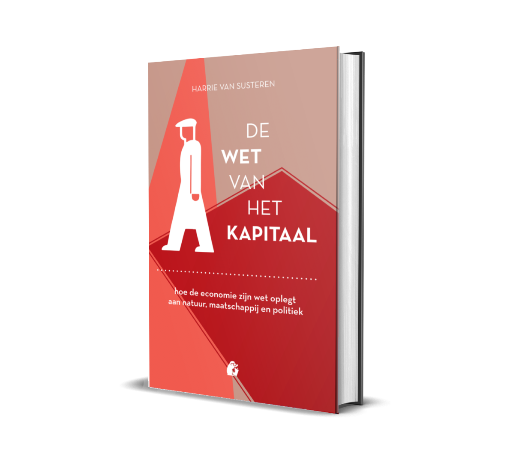

Hoe de economie zijn wet oplegt aannatuur, maatschappij en politiek

Door Harrie van Susteren
Online te bestellen op
Over het boek
Het kapitaal als economische macht heeft zijn invloedssfeer steeds verder uitgebreid over zijn natuurlijke en maatschappelijke omgeving. Het legt zijn wet op aan natuur, maatschappij en politiek.
De bijna heilige status van economische groei, de vernietiging van natuur, en de eenzijdig kwantitatieve bepaling van welvaart, zijn tekenen van overheersing door deze economie. De marktideologie van het neoliberalisme ondersteunt de afbraak van sociale verbondenheid tussen mensen, evenals de omvorming van politiek naar een marktmodel. De wet van het kapitaal is de macht van het kapitaal om zijn wetten op te leggen, waardoor natuur, maatschappij en politiek hun eigenheid en eigenwaarde dreigen te verliezen. ‘Een economie die op termijn de voorwaarden voor menselijk leven op aarde zal vernietigen, heeft zijn legitimiteit verspeeld.’ ‘Dieren zijn bevrijd uit de biologische kringloop en opgenomen in die van het kapitaal.’ ‘Het consumptiekapitalisme organiseert het geluk van mensen. De neoliberale ideologie hun vrijheid.’ ‘Een maatschappij die gebaseerd is op economische relaties, is een mislukking.’
Harrie van Susteren (1946) is socioloog en filosoof.